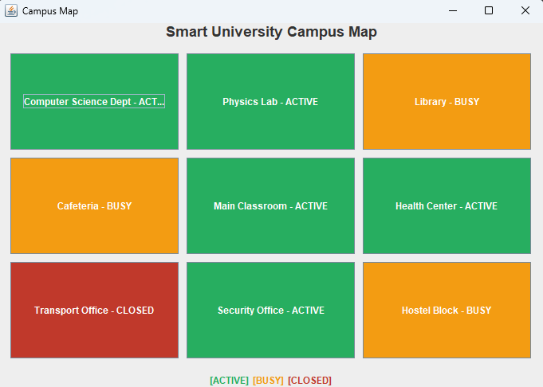

Projects / Smart Campus Management System
Smart Campus Management System
A Semester 2 desktop application for managing campus operations, built to practice core object-oriented design.
- stack
- Java, Swing
- concepts
- Inheritance, polymorphism, encapsulation, generics
Overview
A Java desktop app (built with Swing) that lets an admin manage students, courses, and facilities from one dashboard, with a live campus map showing which buildings are active, busy, or closed.
Screenshots

